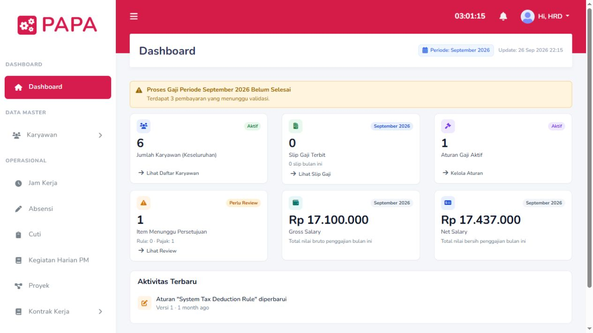

Data pada preview adalah data simulasi.Internal business system
PAPA — Payroll & Rule Management System
Antarmuka penggajian yang menyatukan pengaturan tarif, komponen gaji, pajak, aturan perhitungan, evaluasi, audit, dan penerbitan slip dalam satu alur kerja HR.
- Dashboard ringkasan proses penggajian
- Rule Management System yang dapat ditelusuri
- Audit trail dan alur review konfigurasi
- Slip gaji serta pengaturan jadwal kerja
PayrollRMSHR OperationsFrontend preview
Buka preview aman
Mengapa hanya preview? Aplikasi produksi, source backend, data, dan infrastruktur merupakan aset perusahaan. Versi ini merekonstruksi pengalaman frontend dengan data simulasi, tanpa membawa informasi internal atau akses ke sistem asli.